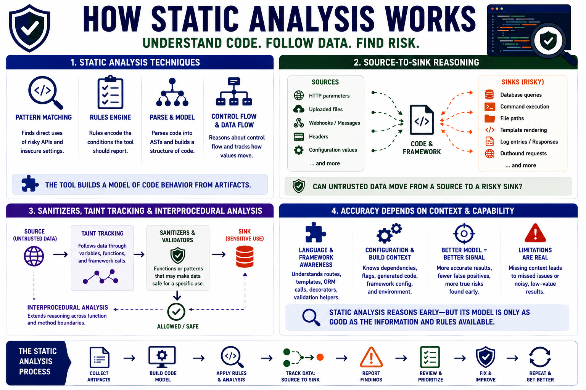

How Static Analysis Finds Issues
Connecting to LMS... Progress: in progress

Narration
Static analysis uses several techniques to reason about code before the software runs. Simple pattern matching can identify direct uses of risky APIs or insecure configuration. Rules encode conditions that the tool should report. More advanced analysis may parse code into abstract syntax trees, reason about control flow, and track how values move through variables, functions, and framework calls. The tool is building a model of code behavior from artifacts.
Source-to-sink reasoning is a central concept. A source is a point where untrusted or security-relevant data can enter the application, such as an HTTP parameter, uploaded file, webhook, message, header, or configuration value. A sink is a place where data may have security impact, such as a database query, command execution, file path, template rendering operation, log entry, response, or outbound request. The analysis asks whether data can move from a source to a risky sink.
Sanitizers and validators are part of that reasoning. A sanitizer is a function or pattern that may make data safe for a specific use, such as escaping output for a particular context or enforcing an allowed set of values. Taint tracking, at a high level, follows data from sources through code toward sensitive sinks. Interprocedural analysis extends that reasoning across function and method boundaries rather than stopping inside one small block of code.
Accuracy depends on language, framework, configuration, and tool capability. A scanner that understands a framework can recognize routes, templates, ORM calls, authorization decorators, or validation helpers more accurately than a generic pattern search. A scanner that lacks configuration or build context may miss generated code, misunderstand dependencies, or report noisy paths. Static analysis can reason early, but its model is only as good as the information and rules available.